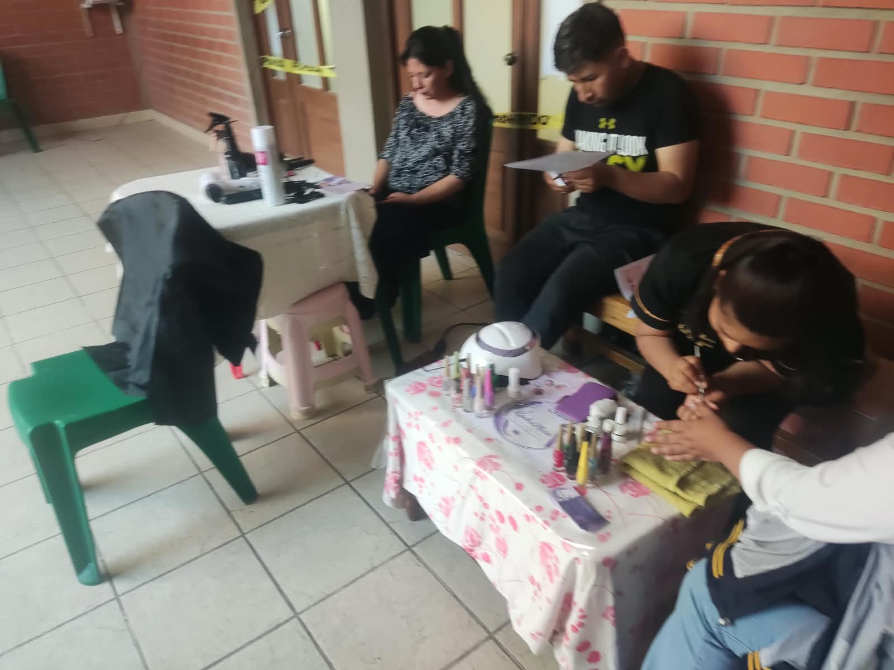
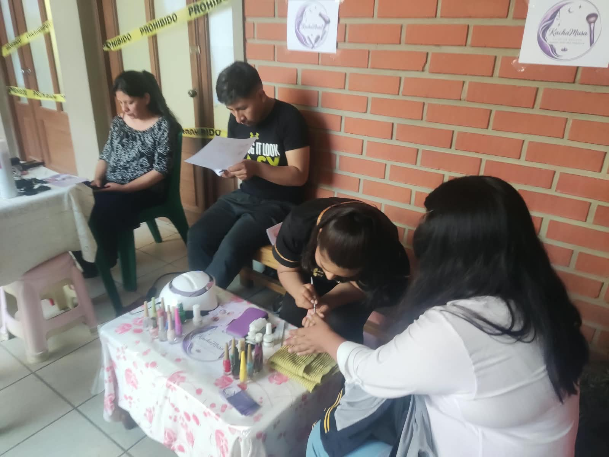

Descripción del Negocio
Brillo Natural es un centro de belleza y bienestar que ofrece una gama de servicios como tratamientos faciales, corporales, manicura, pedicura, depilación y asesoramiento personalizado de productos cosméticos. Nos enfocamos en la utilización de ingredientes naturales y técnicas que promueven la salud de la piel y el bienestar general.


Requisitos para Emprender en Belleza
- Formación y Certificaciones: Títulos y/o certificaciones profesionales en las áreas de servicio que se ofrecerán (estética, cosmetología, etc.).
- Capital Inicial: Necesario para equipos, productos, alquiler (si aplica), licencias y marketing. Estimado entre 8.000€ - 20.000€.
- Local Adecuado: Espacio limpio, ordenado, con buena ventilación e iluminación. Debe cumplir normativas sanitarias.
- Proveedores de Calidad: Productos y equipos de marcas reconocidas y confiables, preferiblemente con enfoque natural.
- Conocimiento de Tendencias: Estar al día con las nuevas técnicas y productos del sector.
- Servicio al Cliente: Habilidad para crear un ambiente relajante y brindar atención personalizada.
- Aspectos Legales: Licencias de apertura, permisos sanitarios, registro de empresa.
¿Con Cuánto se Empieza?
Dependiendo de si es un servicio a domicilio, un pequeño local o un centro completo, la inversión varía. Un servicio a domicilio con pocos productos podría comenzar con 1.500€ - 3.000€. Un centro físico con equipamiento y stock puede requerir entre 10.000€ y 30.000€.
Plan Económico Básico
Costos Iniciales Estimados:
- Alquiler y Adecuación del Local: Variable.
- Equipamiento (camillas, aparatología, mobiliario): 3.000€ - 10.000€.
- Stock Inicial de Productos (cosméticos, consumibles): 1.000€ - 4.000€.
- Licencias y Permisos: 300€ - 800€.
- Marketing y Diseño Web/RRSS: 500€ - 2.000€.
- Formación Continua: 300€ - 1.000€.
Costos Operativos Mensuales Estimados:
- Alquiler y Servicios: Variable.
- Reposición de Productos y Consumibles: Dependerá de la demanda de servicios.
- Salarios: (Si aplica).
- Marketing y Publicidad: 200€ - 800€.
- Mantenimiento de Equipos: Variable.
Proyecciones de Ingresos:
Se calcularán en base a la ocupación de citas, el precio medio por servicio y la venta de productos. Es importante definir paquetes de servicios y programas de fidelización.
Diseño del Local/Negocio
Concepto: Natural, sereno y profesional. Paleta de colores que evoca tranquilidad: blancos, verdes suaves, tonos tierra, madera clara. Ambiente relajante y higiénico.
Distribución:
- Recepción: Cálida y organizada. Área de espera cómoda con asientos y quizás una pequeña exhibición de productos. Mostrador funcional.
- Cabinas de Tratamiento: Privadas, limpias y equipadas con camillas cómodas, buena iluminación (preferiblemente regulable), lavamanos accesible y sistemas de ventilación eficientes. Música ambiental suave.
- Zona de Manicura/Pedicura: Espacio dedicado, ergonómico y con buena iluminación.
- Almacén: Organizado para productos, toallas limpias, etc.
Iluminación: Combina luz general suave con iluminación focalizada en las áreas de trabajo para precisión. Evitar luces frías.
Decoración: Elementos naturales como plantas, madera, texturas orgánicas. Mantener una estética limpia y ordenada.